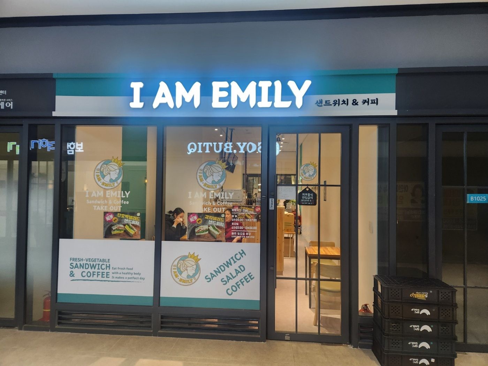
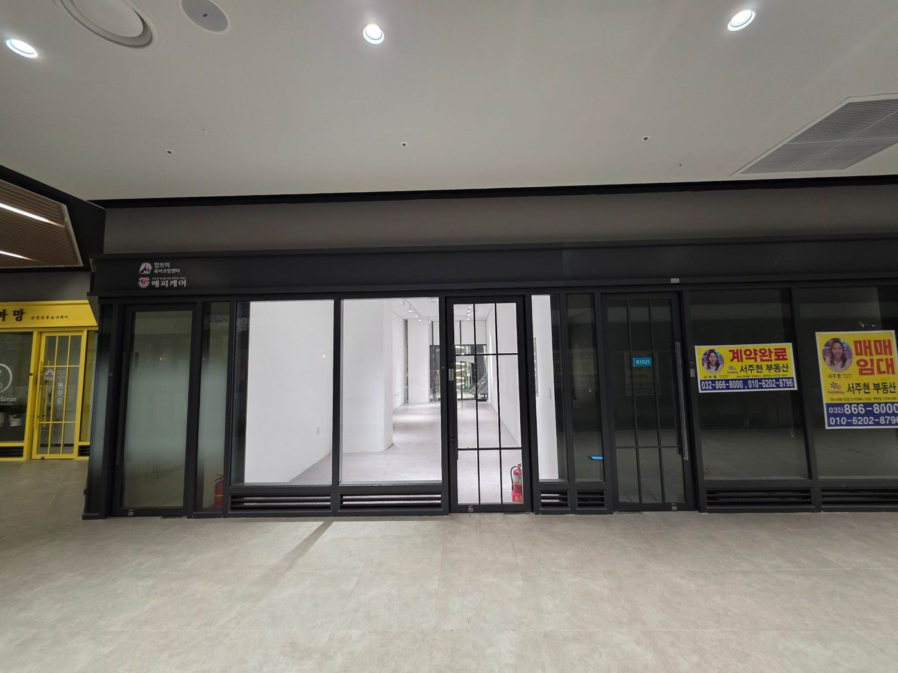
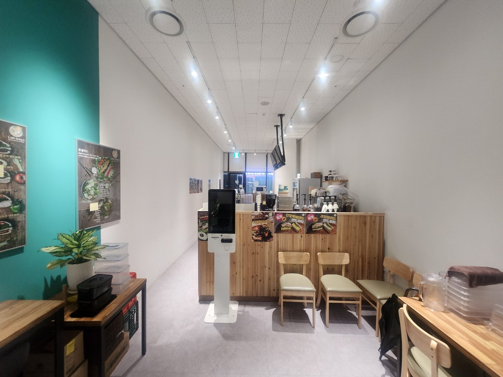
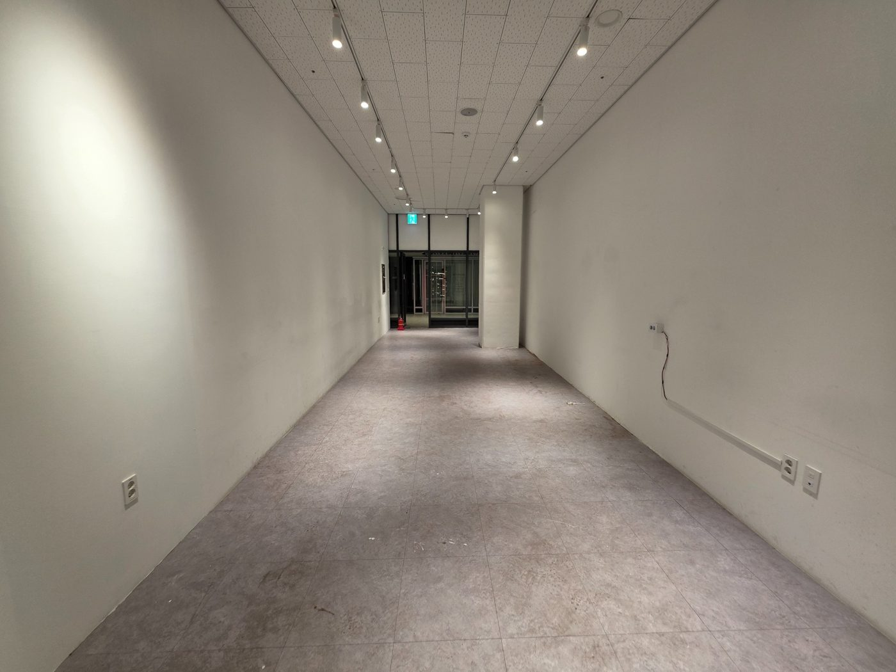
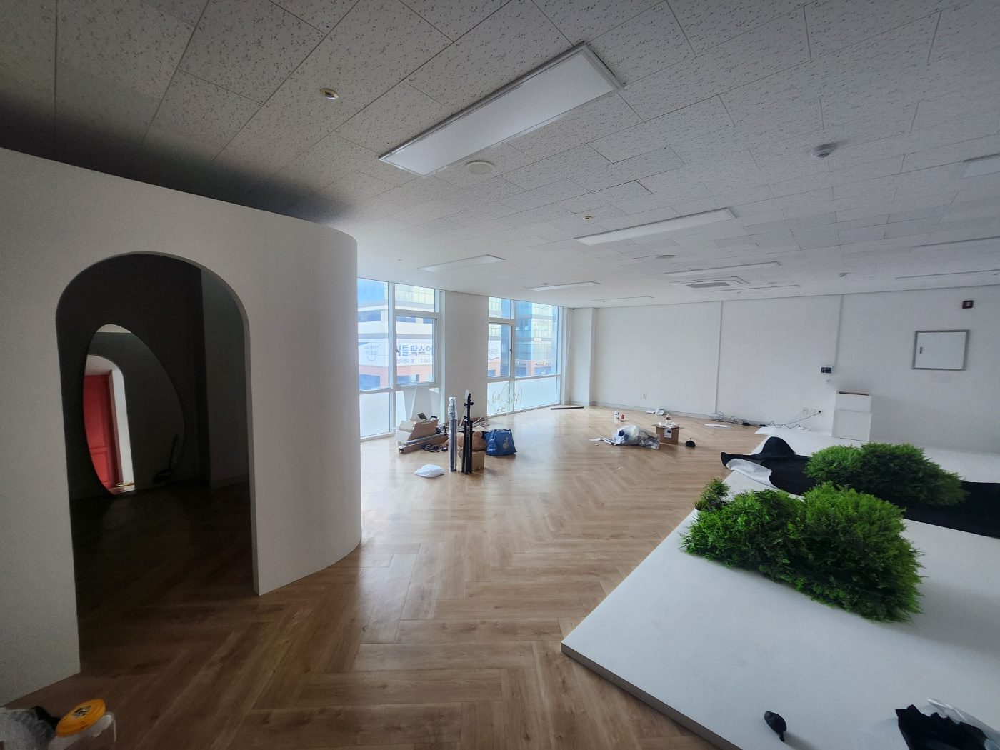
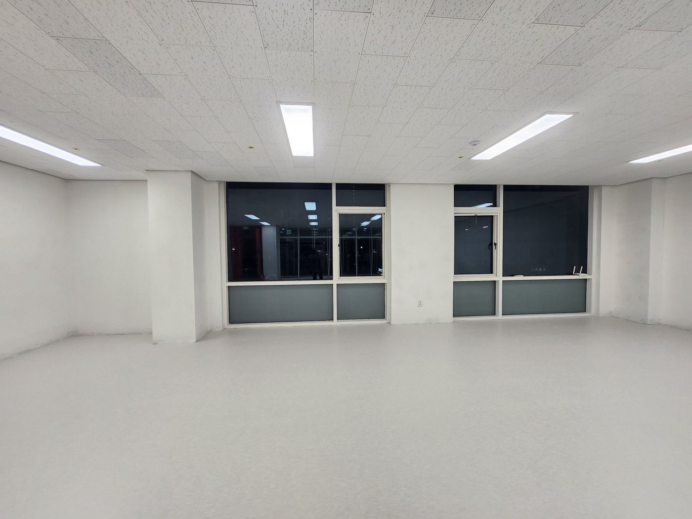
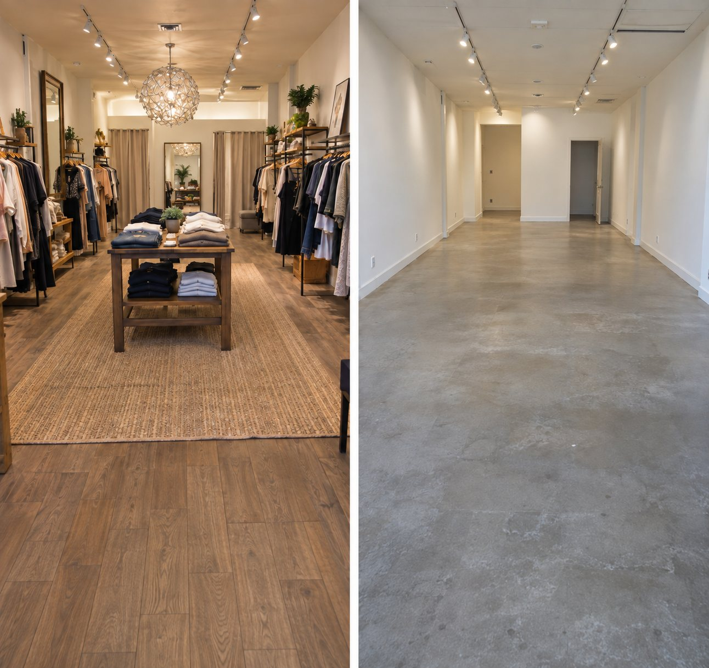
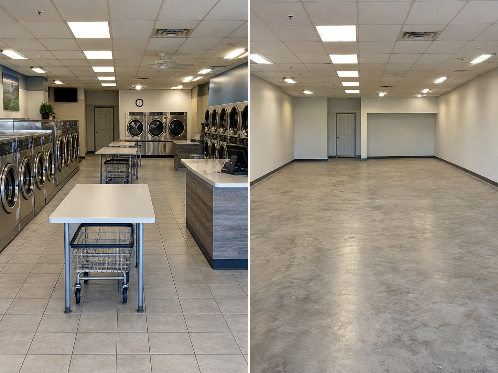

★★★★★
집기 철거와 원상복구 범위를 함께 안내받아 준비하기 편했습니다.
서울 25개 구의 상가 · 사무실 · 매장 철거와 원상복구를 상담합니다. 현장을 먼저 보고 작업 범위를 정리한 뒤 견적을 안내해 드립니다.
무료 방문견적 · 폐기물 처리까지 진행 · 시공 후 1년 무상 A/S
최종 업데이트 2026-10-15 · 작성 오늘의 철거
철거는 가격만큼 과정과 마무리가 중요합니다. 오늘의 철거가 서울 현장에서 지키는 기준입니다.
현장 구조와 작업 여건을 먼저 확인하고 작업 범위와 순서를 정리합니다.
공간 크기와 철거 범위를 기준으로 필요한 공정과 견적을 쉽게 설명합니다.
상담부터 현장 확인, 공사 일정까지 한 흐름으로 관리해 지연을 줄입니다.
철거 후 현장 상태를 확인하고, 시공 후 1년 무상 A/S를 진행합니다.
같은 평수라도 현장마다 금액이 다릅니다. 그래서 사진으로 먼저 상담하고, 현장을 직접 본 뒤 견적을 드립니다.
업종, 구 이름, 평수, 현장 사진을 네이버폼이나 카카오 상담으로 보내주세요.
현장에 방문해 구조와 철거 범위, 원상복구 조건을 함께 확인합니다.
확인한 작업 범위를 바탕으로 견적과 일정을 안내합니다.
아래 요소에 따라 같은 평수라도 비용 차이가 생깁니다. 금액은 현장 확인 후 안내합니다.
천장 · 벽체 · 바닥까지 모두 철거하는지, 일부만 철거하는지에 따라 작업량이 달라집니다.
집기, 목재, 석고보드, 설비 등 폐기물 종류와 양에 따라 처리 비용이 달라집니다.
층수, 엘리베이터 사용 여부, 차량 진입과 주차 여건이 작업 시간에 영향을 줍니다. 서울 도심 상가는 건물 규정상 작업 시간이 정해진 경우도 있습니다.
석면이 포함된 자재가 확인되면 일반 철거와 다른 기준과 절차에 따라 처리해야 합니다.
임대차 계약서의 원상복구 조항에 따라 철거 범위가 달라집니다. 상담 전에 계약서를 확인하시면 범위를 정하기가 수월합니다.
상황에 따라 준비할 것이 다릅니다. 해당하는 상황을 골라 보세요.
점포를 비우고 임대차를 마무리해야 할 때입니다. 철거 일정을 잡기 전에 점포철거비 지원 대상인지 먼저 확인하고, 철거와 원상복구 범위를 함께 정리하면 순서가 꼬이지 않습니다.
새 매장으로 옮기면서 기존 매장을 비워야 할 때입니다. 퇴거 날짜에 맞춰 철거와 원상복구, 폐기물 처리까지 한 번에 일정을 잡습니다.
사무실 이전이나 계약 종료로 내부를 처음 상태로 되돌려야 할 때입니다. 파티션, 바닥재, 천장 등 원상복구 범위를 확인하고 일정에 맞춰 진행합니다.
새 인테리어를 하기 전에 기존 시설을 걷어내야 할 때입니다. 철거 후 필요하면 다음 인테리어 상담까지 이어서 진행할 수 있습니다.
오늘의 철거와 함께한 고객님들이 남겨 주신 후기입니다.
집기 철거와 원상복구 범위를 함께 안내받아 준비하기 편했습니다.
철거 후 공간이 깔끔하게 정리되어 다음 일정 준비가 수월했습니다.
기존 인테리어 철거 범위를 먼저 설명해줘서 진행 과정이 편했습니다.
오늘의 철거가 진행한 현장의 철거 전과 후입니다.








서울 전 지역에서 아래 작업을 상담합니다.
카페, 식당, 의류매장, 프랜차이즈 등 상업공간 내부를 걷어내고 원상복구까지 맞춥니다.
파티션, 바닥재, 천장 등 사무실 내부를 철거하고 퇴거 일정에 맞춰 정리합니다.
임대차 계약서의 원상복구 조건을 확인하고 그 범위에 맞춰 진행합니다.
폐업 일정에 맞춘 철거와 점포철거비 지원제도 기본 안내를 함께 진행합니다.
리모델링 전 내부 철거와 부분 철거를 공간 구조에 맞게 상담합니다.
철거 폐기물 처리까지 함께 진행하고, 필요하면 다음 인테리어 상담으로 이어갑니다.
찾으시는 구를 검색해 보세요. 서울 모든 구에서 상담할 수 있습니다.
서울 25개 구 모두 상담합니다. 구 이름과 평수, 현장 사진을 보내주시면 방문 일정과 함께 안내해 드립니다.
방문견적은 무료입니다. 현장에서 구조, 면적, 철거 범위, 원상복구 조건을 확인한 뒤 견적을 안내합니다.
면적과 철거 범위, 폐기물의 양과 종류, 원상복구 조건, 엘리베이터·주차 같은 작업 여건에 따라 달라집니다. 같은 평수라도 현장마다 차이가 있어 현장 확인 후 안내합니다.
희망리턴패키지 점포철거비 지원은 철거 전에 신청해야 하는 것으로 안내되어 있습니다. 대상과 금액은 신청 시점의 공식 공고를 기준으로 확인해 주세요. 폐업지원금 안내 보기
오늘의 철거는 시공 후 1년 무상 A/S를 진행합니다. 문제가 생기면 전화나 카카오 상담으로 알려주세요.